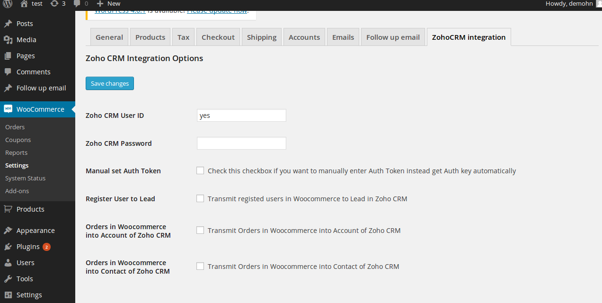
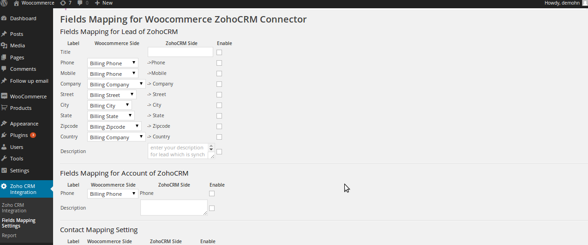
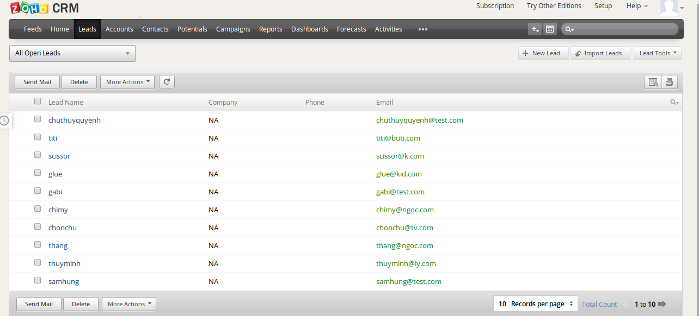

“Woocommerce ZohoCRM Integration”
Documentation by “Magenest” v1.0
“Woocommerce ZohoCRM Integration”
Thank you for purchasing my plugin. If you have any questions that
are beyond the scope of this help file, please feel free to email
via my user page contact form here. Thanks so much!
Table of Contents
- Introducing to Woocommerce ZohoCRM integration
plugin
- Configuration
- Fields Mapping for Woocommerce ZohoCRM Connector
- Email variables
- Example of usages
- Road map
A)Introducing to Woocommerce ZohoCRM integration - top
The Woocommerce ZohoCRM integration Plugin is an indispensable tool to help you
synchronize data instantly between Woocommerce and ZohoCRM. The plugin allows to synchronize register customers in
Woocommerce to Lead in ZohoCRM, order in Woocommerce to Account and Contact in ZohoCRM.
Admin can define
mapping fields between Woocommerce and ZohoCRM
Features
Synchronize register customer of Woocommerce to Lead in ZohoCRM
Synchronize Order of Woocommerce to Account in ZohoCRM
Synchronize Order of Woocommerce to Contact in ZohoCRM
Fields Mapping setting
Report of synchronized data between Woocommerce and ZohoCRM
B) Configuration - top
You can access configuration page by clicking Settings of
woocommerce, then click ZohoCRM integration tab

1. Zoho CRM User ID
Enter your ZohoCRM user id
2. Zoho CRM Password
Enter your Zoho CRM Password
3. Manual set Auth Token
Check this checkbox if you want to manually enter Auth Token instead get Auth key automatically
Do not check this checkbox if you want the plugin get the Auth Token automatically
4. Register User to Lead
check this checbox if you allow transmitting registed users in Woocommerce to Lead in Zoho CRM
5. Orders in Woocommerce into Account of Zoho CRM
check this checbox if you allow transmitting Orders in Woocommerce into Contact of Zoho CRM
C) Fields Mapping for Woocommerce ZohoCRM Connector - top
Woocommerce ZohoCRM Integration plugin allows admin configure fields mapping between Woocommerce and ZohoCRM.
There are 3 tables for setting fields mapping.
You can check/un check the enable checkbox to enable/disable the mapping for each fields.

Fields Mapping for Lead of ZohoCRM
There are severals fields allow you configure fields mapping
efficiently
- Title you can define Title for Lead that is synchronized from Woocommerce here.
For example, if you fulfill this fields with value Customer from Woocommerce store
- Phone you can select Billing Phone /Shipping Phone of customer in Woocommerce to map with Phone of ZohoCRM Lead
- Mobile you can select Billing Phone /Shipping Phone customer in Woocommerce to map with mobile of ZohoCRM Lead
- Company you can select Billing company /Shipping company customer in Woocommerce to map with company of ZohoCRM Lead
- Street you can select Billing street /Shipping street customer in Woocommerce to map with street of ZohoCRM Lead
- City you can select Billing city /Shipping city customer in Woocommerce to map with city of ZohoCRM Lead
- Zipcode you can select Billing Zipcode /Shipping Zipcode customer in Woocommerce to map with zipcode of ZohoCRM Lead
- Country you can select Billing country /Shipping country customer in Woocommerce to map with country of ZohoCRM Lead
The section Fields Mapping for Account of ZohoCRM
let you define the mapping fields for Account of ZohoCRM
- Phone you can select Billing Phone /Shipping Phone of order in Woocommerce to map with Phone of ZohoCRM Account
- Description you can define Description for ZohoCRM's Account that is synchronized from Order Woocommerce here.
for example, you can fulfill it with "This account is created automatically from Order in Woocommerce"
Section Contact Mapping Setting
let you define the mapping fields for Contact of ZohoCRM
- Title you can define Title for ZohoCRM's Contact that is synchronized from Order Woocommerce here.
for example, you can fulfill it with "Purchased customer"
- Description you can define Description for ZohoCRM's Account that is synchronized from Order Woocommerce here.
for example, you can fulfill it with "This contact is created automatically from Order in Woocommerce"
D)Woocommerce Zoho CRM Integration report - top
Click on Zoho CRM Integration > Report to access the report page of plugin.
You will see a table that list all data transmitted between Woocommerce and Zoho CRM
E) Example of usages - top

Once again, thank you so much for purchasing this plugin. As I
said at the beginning, I'd be glad to help you if you have any
questions relating to this plugin. No guarantees, but I'll do my best
to assist. If you have a more general question relating to the plugin
on Codecanyon, you might consider visiting the forums and asking
your question in the "Item Discussion" section.
F) Road map - top
- Synchronize Product of Woocommerce to Product in Zoho CRM
- Synchronize Order of Woocommerce to Order in Zoho CRM
- Extend Rest api of Woocommerce for bi-direction synchronization
If you have want the further features that is not supported in current version, do not hesitate to contact us.
Magenest
Go To Table of Contents